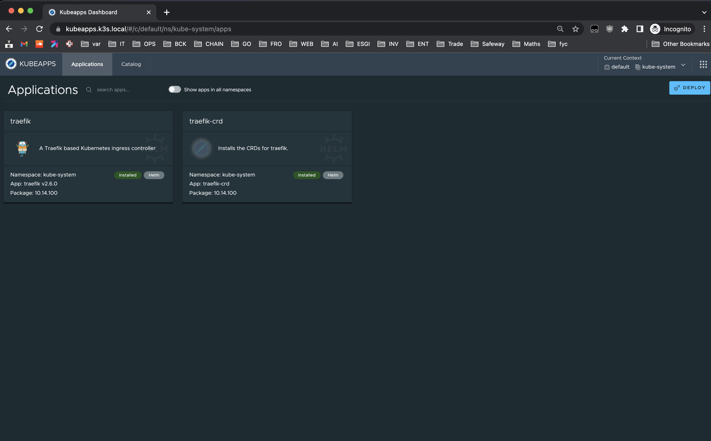

1.9 Installation de kubeapps¶
Commençons par construire notre manifest. Pour cela nous avons besoin de définir plusieurs variables pour rendre configurable l'utilisation de notre rôle :
Dans playbook/roles/kubeapps/defaults/main.yml on aura donc :
-
kubeapps_namespacepour définir le namespace à créer et sur lequel on déploie kubeapps -
kubeapps_hostnamepour choisir à quel url sera disponible kubeapps.
Par défaut kubeapps sera disponible sur
kubeapps.k3s.local
| playbook/roles/kubeapps/defaults/main.yml | |
|---|---|
Ensuite nous allons utiliser toutes ces variables dans un manifest kubernetes qui inclus deux resources. Un namespace et une définition de dépendance helm avec sa configuration.
Note sur le templating jinja dans la moustache
{{}}rajouter un-signifie qu'on ignore le format du côté où l'on utilise. Par exemple un retour à la ligne (colonne 0) sera ignorer pour-}}.
Note On configure le ingress directement dans la définition helm tout en précisant bien que l'on utilise traefik en sachant que par défaut il est souvent utilisé
nginxcomme controller ingress
Nous allons lancer la commande de templating grâce au module template de la collection builtin (fonctionnalités incluses par défaut) de ansible.
Celle ci va faire le remplacement des variables utilisées dans les moustaches {{}} et placer le fichier au bon endroit dans notre machine invité. Ici, il se trouvera dans notre container node-0 dans le répertoire /var/lib/rancher/k3s/server/manifests/kubeapps-chart-crd.yml
| playbook/roles/kubeapps/tasks/main.yml | |
|---|---|
Pour vérifier que les pods de kubeapps sont bien prêt :
- On regarde d'abord si la tâche
helma bien pu se finir
helm-install-kubeapps-4cdf8 avec status COMPLETED
Ensuite connexion à dex Idp pour s'authentifier avec github¶
Pour ajouter la couche d'authentification kubeapps fait appel à la solution oauth2-proxy. Il s'agit donc d'un reverse proxy qui redirige le trafic http d'un client à un serveur implémentant oauth2 avant de permettre la connexion à kubeapps.
Cette authentification est associée à un cookie converti en base64 à partir d'un secret que l'ont définie avec une commande simple :
| playbook/roles/kubeapps/defaults/main.yml | |
|---|---|
--oidc-issuer-url est obligatoire quand l'on n'utilise pas un fournisseur d'authentification pré-conçu comme github, gitlab, google, etc. Il faut donc le définir avec l'url de dex pour qu'il soit bien consommé par le client openid de oauth2-proxy.
Note : Pour consulter la configuration d'open id vous pouvez ouvrir l'url dex.k3s.local/.well-known/openid-configuration dans votre navigateur.
Ensuite on réutilise nos secrets de dex idp pour créer et configurer l'accès du container authProxy à open id dans le pod frontend de kubeapps.
Enfin maintenant que notre chart est déployé avec un combo oauth-proxy / dex fonctionnel nous allons configurer le contrôle d'accès à l'administration du cluster. Nous utilisons pour cela une ressource ClusterRoleBinding pour lier un groupe d'une organisation github à un rôle cluster-admin qui lui donne tous les droits sur le cluster.
| playbook/roles/kubeapps/templates/kubeapps-chart-crd.yml.j2 | |
|---|---|
Nous voilà prêt à tester notre déploiement de kubeapps. Nous allons donc lancer notre test molecule et attendre son exécution :
Une fois l'exécution terminée, il faut attendre quelques secondes pour que tous les pods soient bien prêts. On peut alors se connecter à l'interface web de kubeapps en se connectant à l'adresse https://kubeapps.k3s.local et en utilisant notre compte github nous allons pouvoir nous connecter.
Voici la page de login attendue :

Et voici la page de dashboard de kubeapps une fois connecté :

Mise en place des tests de kubeapps¶
Grâce au module ansible k8s info on teste les pods centraux de kubeapps. Si ces pod sont bien en état ready, c'est que kubeapps est prêt
On note qu'il est important de préciser à
k8s_infola localisation kubeconfig qui se trouve à un endroit un peu exotique avec k3s. Cette config comporte des informations utilisateur et des certificats permettant de se connecter sur le cluster.
Si votre playbook est déjà passé en entier un molecule verify va suffire pour jouer le playbook verify.yml.
Vous devriez voir passer les assertions et les autres tâches.
Pour autant vous ne verrez pas encore de retour de ce type tout simplement par ce que le code n'est pas complet.